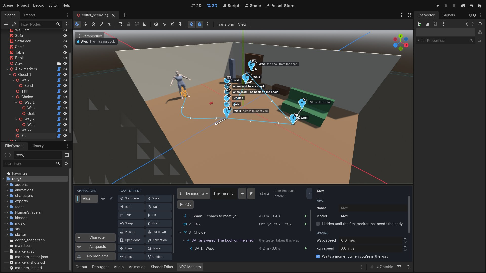
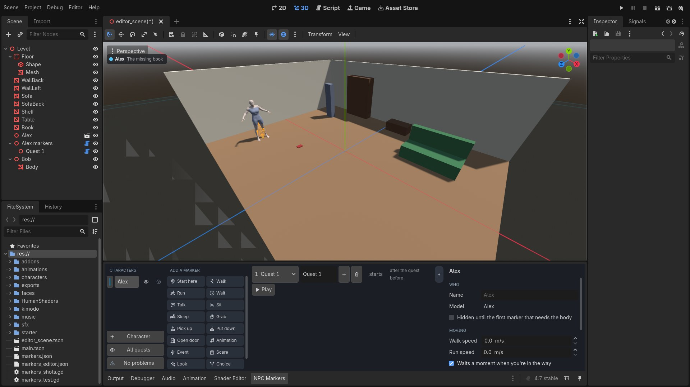
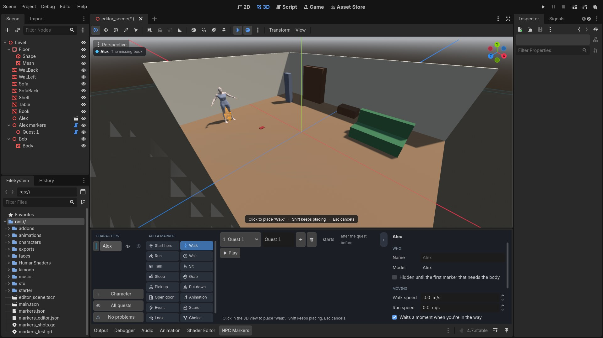
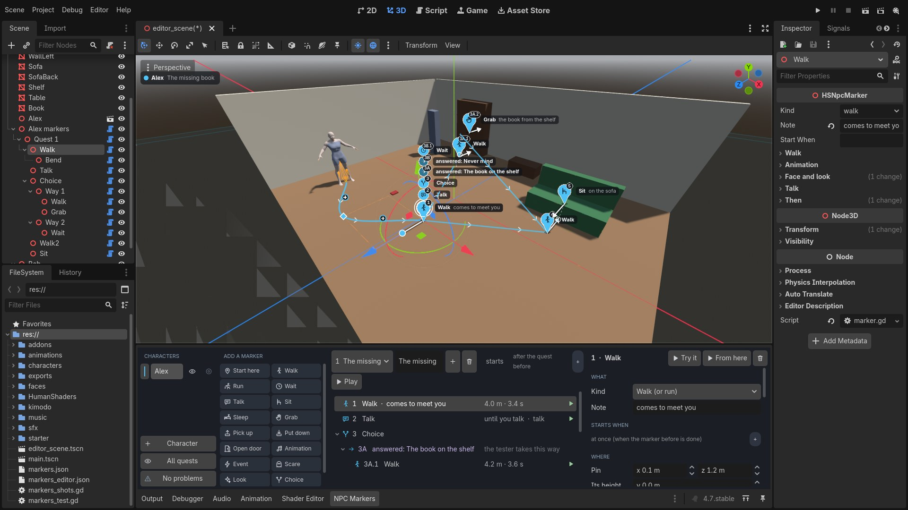
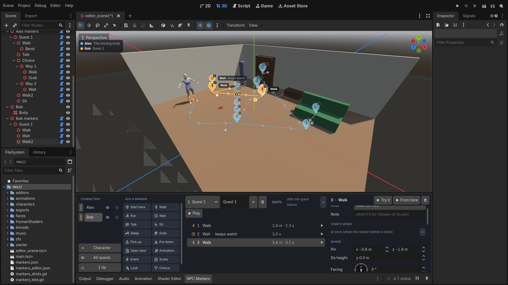
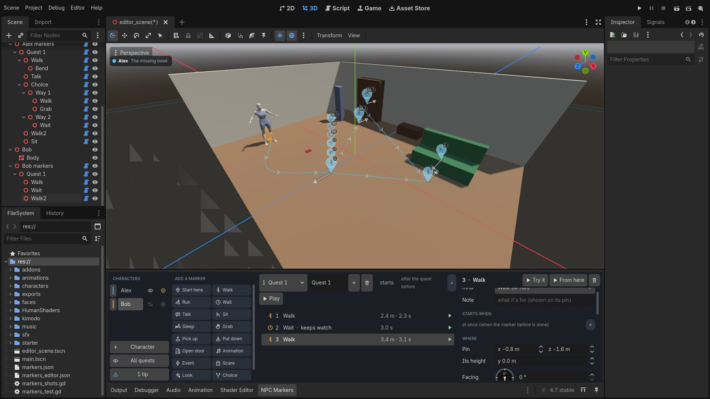
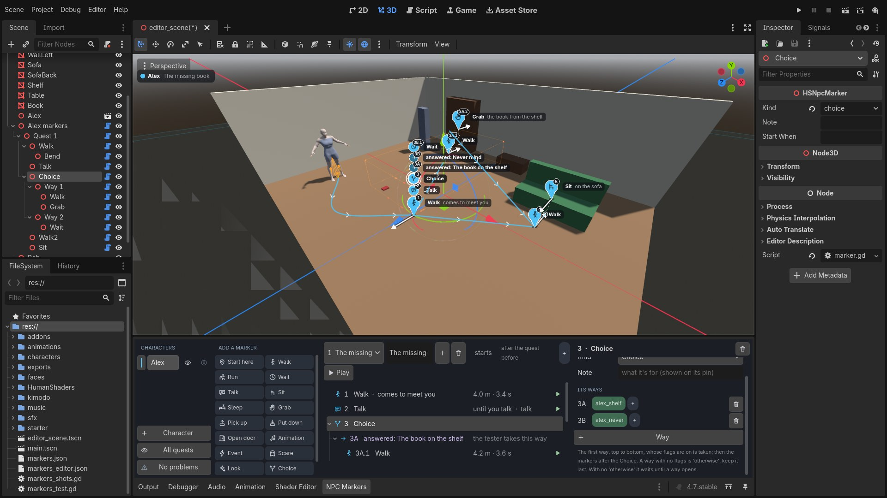
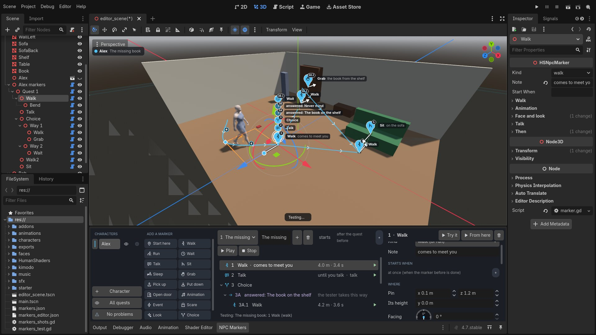
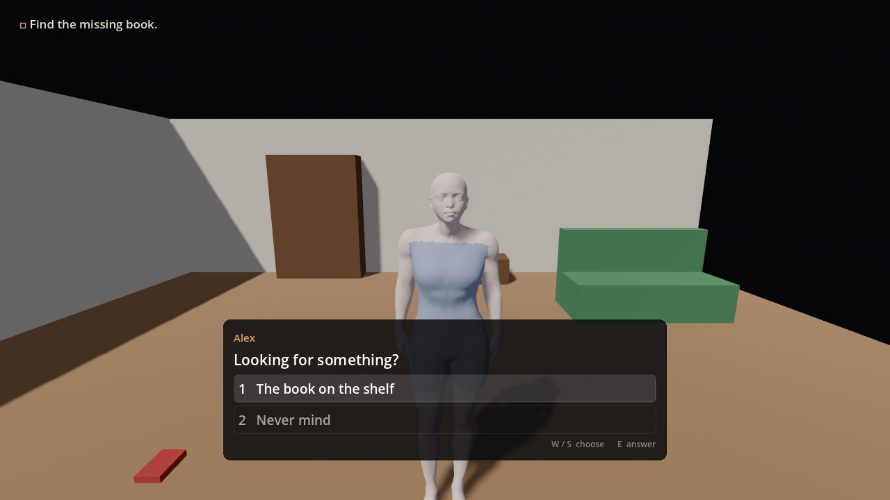
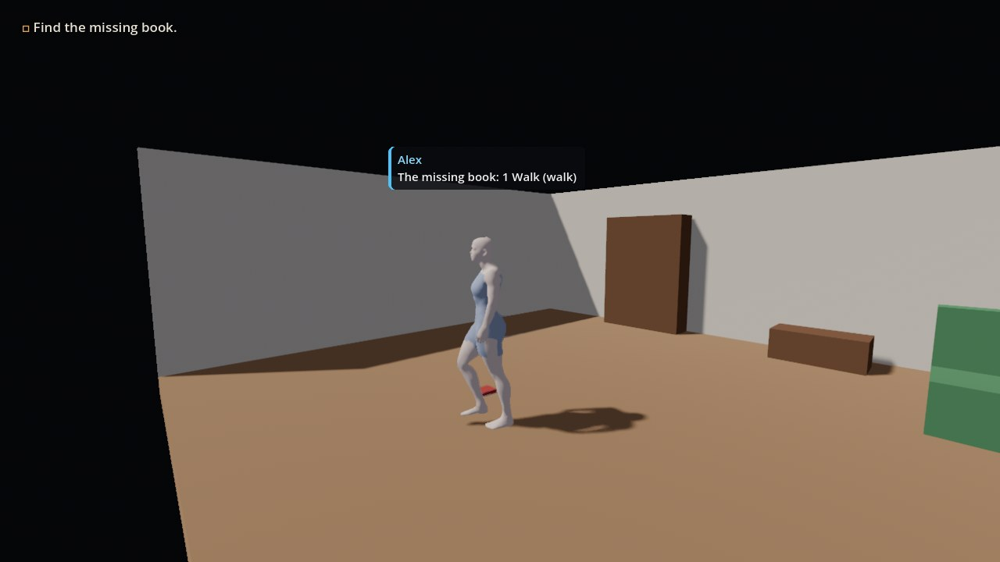

NPC markers
A character's whole part in your game, placed in the scene: where they walk, where they wait, what they grab, when you can talk to them and what your answer changes, when they vanish. You click cards and click the floor. Nobody writes a script.
1What it is
Beside each character sits a node that holds their quests, and in each quest their markers, in the order they're done. A marker is one thing: Walk here, Sit there, Talk, Grab that. In the 3D view each is a pin in the character's colour with its number; the line between pins is the path they walk; the arrow is the way they face.

Every marker is three things, and that's the whole idea:
Starts when
Nothing: at once, after the marker before. Or: a flag is on, a quest is open, after 3 seconds, you're near, you're not looking.
What happens
Its card: walk, wait, talk, sit, sleep, grab, an animation, an event, a choice, disappear.
Then
Flags switched, a task ticked, a line, a sound, something fired (a scare).
What the character is carries on from marker to marker and from quest to quest: where they stand, sitting or asleep, hidden, their face, their look, what's in their hand. A quest that doesn't end in Disappear leaves them where they are for the next.
2Before you start
- A project made by hand. A new one has the plugin switched on:
python tools/godot_byhand.py new ~/Games/MyGame
One you already have gets it (and has it switched on) with:python tools/godot_byhand.py install ~/Games/MyGame
- A character. Best: a Character Studio export baked by the Animator (it walks at its own pace, sits, sleeps, reaches, opens doors). Any model with animations called idle, walk and run also walks. A model with none still goes where it's sent: it slides.
- A floor with a collider where they walk (an interior or a street exported from the studio has them). Stairs want their steps' colliders.
3Add a character
- Open NPC Markers along the bottom of the editor.
- Select the character's model in the scene.
- Press + Character.

The four parts of the tab, left to right: Characters (who has markers), Add a marker (the cards), the quest and its storyboard (the markers in order), and the form of whatever is picked.
4Place markers
- Click a card: Walk.
- Click the floor in the 3D view. A pin: that's where they walk to. They start from wherever they are, so nothing ever jumps.
- Click the next card, click again. Each new marker goes after the one that's picked.

Cards with no place of their own (Wait, Talk, Event, Choice...) are added at once: they happen where the character is by then. A pin lands on what you click: the floor, a seat's top, a shelf, whether it has a collider or not.
5In the 3D view

| A pin | A marker with a place. Its drawing says what it is, the number at its corner its turn. Its point is the place. |
| A round badge | Something that happens where they stand (a wait, a talk, an event, a choice and its ways), stacked over that place. |
| The line | The path they walk, with little arrows the way they go. Dashed inside a Choice's ways. |
| The white arrow | The way they face there. |
| Drag a pin | It rides the floor (or the seat, the shelf) under the mouse. |
| Drag the arrow's tip | Turns the facing. |
| Click a + on a path | A bend: the path curves through it. Drag it. Right-click it to delete it. |
| Ctrl+Z | Everything here is undone as anything else in Godot. |
Whose markers you see


6A marker's form
Pick a marker (its pin, or its row in the storyboard). The form on the right is that marker in plain words.
| Kind, Note | What it is (it can be changed), and a few words shown on its pin. |
| Starts when | Chips. Press +: the scene's flags with a tick each, a quest that's open or done, after a wait, you're near, in or out of your sight, has been shot. Click a chip to change it, turn it into its "not", or take it out. No chips: at once. |
| Where | The pin as numbers, and the facing as a dial (what the mouse does in the 3D view). |
| Its own settings | A walk's pace, a wait's length, a grab's thing... |
| Animation | How fast its clip plays, and how many seconds it's eased into. |
| Face and look | An expression from here on; faces by flag; a skin and eyes (monsters). |
| Talk | You can talk to them here: what's said, your answers. |
| Then | A line, a sound, things fired, flags, a task ticked or added. |
7The cards
| Start here | Put at the pin, facing its arrow, and shown. At once, only when you're not looking, or fading in. |
| Walk, Run | To the pin, through its bends, then turns to the arrow. Or Comes to you and stops short. |
| Wait | Stays put, idling (or in a loop you pick), for some seconds or until the next marker can start. Keeps turning to face you. |
| Talk | A Wait you can talk to, that stays until you do. |
| Sit | Click the seat's front edge; the arrow is the way the knees point. Stays sat until a later marker moves them (they stand up first by themselves). |
| Sleep | Click the bed's edge; the arrow points away from the bed. Sits, lies down, sleeps. |
| Grab | Click where the hand should go. Three reaches: the floor, a table (about 0.86 m), a shelf (about 1.65 m); the nearest to the pin's height is used. |
| Pick up, Put down | Pick the thing in the 3D view: it goes into the hand, and stays there until a Put down leaves it at its pin. |
| Open door | Click the handle, pick the door. The arrow points into the door. |
| Animation | Any animation of the model's, or a file (a Kimodo dance). Once, several times, or looping. |
| Event, Scare, Look | Nothing with the body: what's under Then, at once. A Scare is heard by the Fear node; a Look changes skin and eyes. |
| Choice | Takes the first of its ways whose flags are on. |
| Repeat | The markers inside it again: N times, until a flag, or on and on. |
| Disappear | Hidden and switched off: not drawn, not animated, not processed. Back with a Start here, or by itself when a later marker needs the body. |
8Talking, and answers
- Click the Talk card (or turn on You can talk to ... here on any marker where they stay put).
- Type what's said, a line a row.
Alex: Looking for something?names who says it; just words are the character's;You: ...is yours.[smile]in front wears that face while it's said. - Press + Answer for each thing you can answer. Each answer gets a flag of its own (you can rename it), a face, a reply.
alex_shelf and Alex smiles; "Never mind" turns on alex_never.- Answers are given once each time the character comes to that marker. Talked to again they say the Asked again line, or nothing.
- Another conversation, for when flags are on: the first conversation whose flags are on is the one had. So a flag picks what's said, and with it the face.
- While you talk you stand still and the character starts nothing: nobody walks off mid-sentence.
9A Choice: which way
Press A way for each answer under the answers. A Choice appears after the Talk with a way for each answer's flag. Pick a way in the storyboard, then place cards: they go inside it.

alex_shelf is on, 3B when alex_never is. After either, the markers after the Choice (4, 5).10Quests
- The + beside the quest's name makes a new quest. Its starts chips say what starts it: usually a task of the Story's being open (
on:book), or a flag. - A quest with no chips starts when the quest before is finished (the first: when the game starts).
- A quest with chips starts the moment they're so, even in the middle of an earlier quest, which is cut short. The character never goes back up the list.
- They carry on from where they are. If a later quest cuts in while they're somewhere it doesn't expect, they're put where it expects when you can't see it, and walk from where they are when you can.
11Speed, time, easing
- Pace: the character's own walk or run (a baked character's clips say how fast they travel, so the feet keep step).
- Speed ×: 0.5 a slow walk, 1.5 a hurry.
- Or take N s: they get there in that time, whatever the distance. The storyboard shows each walk's length and time.
- Animation speed on any clip or loop (a faster idle, a slower dance).
- Eased in: the seconds a clip is blended into from what came before. A walk speeds up over its first steps and slows into its last.
12Stairs
A Walk follows the floor under its path. For a flight: a bend at the foot, a bend at the top, and One smooth curve off (straight from bend to bend). They rise before each riser and come off each step late, so the feet are never inside a step. On two storeys they follow the floor the path lies on.
13A dance of your own
- Drop the animation in
res://animations/: a Kimodo.npz, or a Godot animation. - Place an Animation card, pick it under Or a file, tick It loops for a dance that goes on.
A Kimodo motion is fitted to the character's own skeleton the first time it plays. The story from the request, as
markers: Wait (you can talk; the answer turns on go_dance) →
Walk to their room (Starts when: go_dance) → Animation.
14Faces, looks, scares, being shot
- Face: an expression worn from that marker on (smile, sad, angry, afraid, scream...), or
A face by flags: "if
gave_gift: smile; otherwise: sad", looked at while they're at that marker. - Look (with the Look plugin): a skin (chrome, ember, the cloak...) and eyes (glow, black, void...) from that marker on, or the model's own again.
- A scare: Start here with when you're not looking, a Run that comes to you, a Scare that fires a scare area or a cue with a scream for a face, then Disappear.
- Shot (with the Weapons plugin's hit reaction under the character): the flags
shot:alexanddown:alexset themselves. Pick the character (their name in the list) and say what going down means: the quest stops (its other markers never run; a later quest that asks fordown:alexcan bring them back), gone for good, or can't be killed (up again and on: only the flags remember, for an ending).
15Try it
Try it plays the picked marker in the 3D view; From here it and what follows; Play beside the quest all of it. A copy of the character plays; the real one isn't touched and nothing is saved.

16In the game


The flags a character sets by themselves (the name in small letters): talked:alex after a talk,
shot:alex at the first hit, down:alex when shot down.
17The rules, and what's not there
- Markers run top to bottom. A marker starts when the one before is done and its Starts when is so.
- Quests run in order; one with chips cuts in; never back up the list; a quest runs once.
- What the character is carries on. Disappear hides; a later marker that needs the body brings it back.
- Problems (bottom left) lists what can't work as it is: a flag nothing turns on, a way after "otherwise", a Repeat that never ends before other markers. Each takes you to its marker.